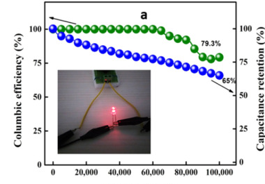

2026-10-31 · 第十二轮训练结束，随后发现并更正旧指标误读
指标纠错已落库，纠错后的模型尚需复验
目标继续active，尚无全面达标模型。输出始终是指定圈数和条件下的电容保持率。最新数据已更正，不能把错误输入下算出的分数当作有效保持率成绩。
具体哪里出了错
MK9论文Fig10a左轴是绿色库仑效率，79.3%；右轴是蓝色电容保持率，65%。正文也明确把79.3称为库仑效率。旧提取程序把两个指标的角色对调，后续旧人工核查也没纠正。本轮按来源查大误差、重新读原图时发现了这个处理错误。

这轮成绩如何看
| 原预定主方案 | R² | MAE/pp | RMSE/pp | 结论 |
|---|---|---|---|---|
| 双电极前20% | 0.439 | 6.470 | 8.264 | 含MK9指标错误，只保留为审查历史 |
| 双电极前10% | 0.601 | 5.474 | 6.373 | 该分支未含MK9，仍未达标 |
原10%输入逐对象核对与当前数据一致，此次特定错误没有改变它。RF早期10%支线R²约0.702、MAE约4.489pp，仍未同时通过全部门槛，继续保留研究。不同窗口来源组成不同，不能据这两行作窗口长短的因果判断。当前纠错数据尚未重新拟合，没有新的纠错后分数。
数据库怎样改，原记录怎样留
A当前入口data.training_latest已前向v7r1：1个循环记录、4个训练用途和1个候选，共6条处理记录更正为保持率65，另存CE79.3。所有前后值、哈希和出处保留，旧v7和父链未改；其他选定记录逐条保持，物化新库的SQLite完整性和外键通过。
B当前入口data.retention_research已前向3h：旧绿线在当前SQL中停用，新读蓝色保持率21个实际标记，目标65。旧70个曲线对象完整保留，metric_supersessions记录替代关系；历史raw_json里的approved=true不代表当前准入。前20%有4点，前10%只有2点仍未准入。当前2E前20%仍27条/22来源、前10%23条/18来源；同篇多样品依旧整来源隔离。
本轮原计划、输入、6400次拟合记录、内外层预测、失败记录和原结果均保留；59个冻结对象核对通过，只有两个滚动指针按原字节归档后前向更新。3E数据、原37冻结记录、原文/SI以及旧模型保持。旧B2E另外5个来源已复查指标角色，暂未发现同类认错；四条未准入记录和MMC参照精度限制继续保留。
下一步做什么
先基于纠错后的3h/v7r1另冻结同16配置的有限复验：20%需3520次新拟合；10%快照已完全一致，可在全部哈希和预测键核对后复用2880条旧拟合记录。这是具体复验方案，尚未冻结或启动。主方案、原六项/形状对照、来源隔离和全部指标门槛保持，不看新的外层分数临时加候选。
完整曲线监督也是继续保留的方向：已有中段曲线可增加训练监督，但旧清单中MK9绿线部分已隔离，必须按当前SQL准入重新构建。新增曲线位置不增加独立论文数，外层和内层都必须整来源排除。A直接预测、3E、RF/GPR/XGBoost/静态组合、BP及稳健/混合路线继续保留。
R²>0.95、MAE≤2pp、RMSE≤3pp、尾部误差、相对三种简单基线至少改善20%、完整覆盖及真正新来源泛化仍须共同满足。真正未触碰的外部验证来源仍为0。旧MK9“迟发衰退”的解释撤回：它描述了CE绿线，不能用来解释保持率模型。
科学有效性说明 · 63917项纠错核验 · 当前API核对 · 原始模型记录保存核对 · 具体复验方案